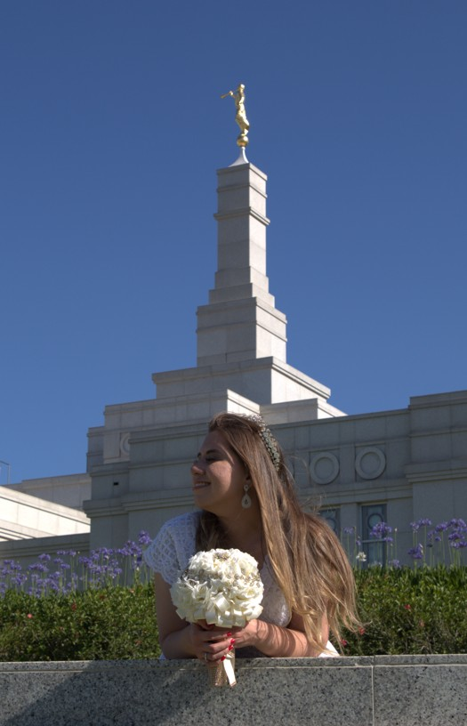

Renata Brunelle Alves Menezes Vargas | WDD 130
Hi! My name is Renata Brunelle, I live in Rio Grande do Sul, Brazil. I love crocheting, sewing, traveling, and learning new things. I love listening to music and dancing; my favorite music styles are dance and rock. I've been married for three years. My dream is to be a software developer. I'm very happy to be at BYU.